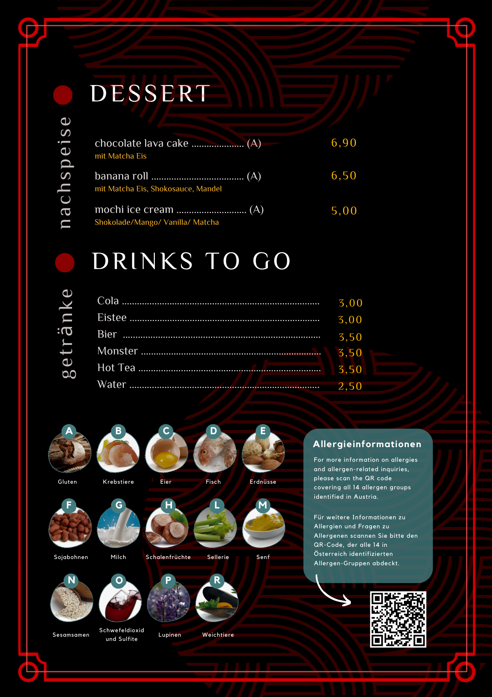
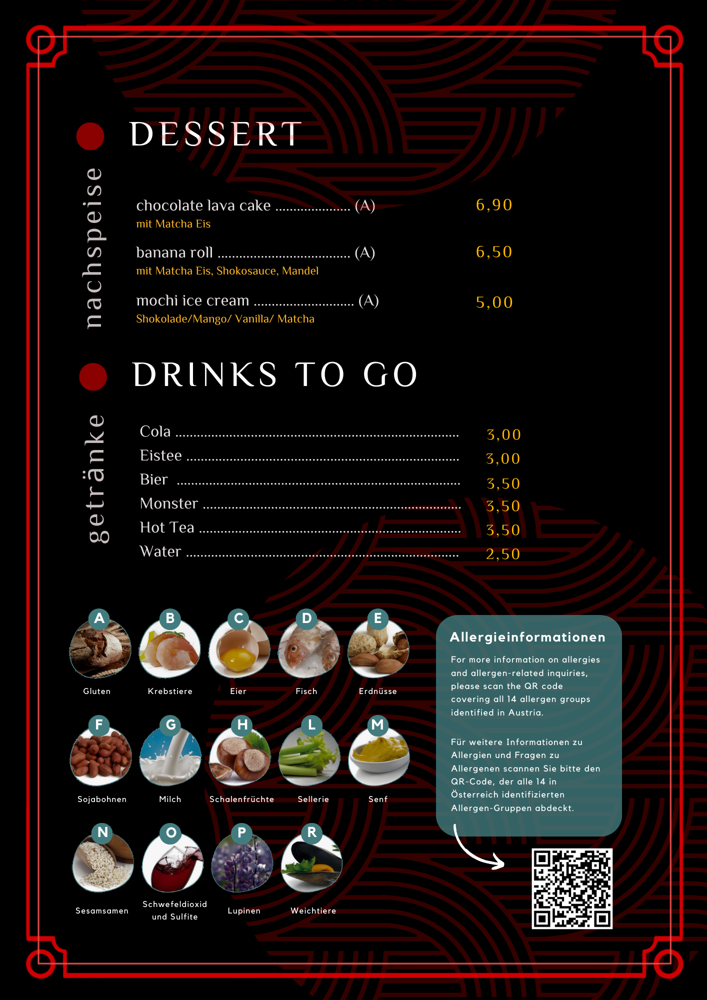

The newspaper page shown features our Chef in the VorMagazin back when he was working in Vienna. So, who is our Chef? His name is Ralph Jun Salvaleon. A hardworking family man, who ventured here in Villach to share his skills by providing good food. With his meticulous approach to sourcing and matching fresh ingredients, his exceptional skill at balancing flavour and texture, he has earned a sought after reputation in Vienna as a Sushi Chef Master. Accompanied by the desire to give back the graces he has, he came up with MakiTsika. Maki as in a kind of sushi, and Tsika meaning "to chat or getting to know." The MakiTsika name represents the goal in venturing to know more for the improvement of quality food, quality taste, and quality time.
(Ralph Jun Salvaleon, Sushi Master wearing a dark blue 'kimono')